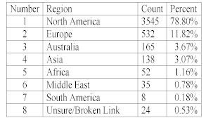
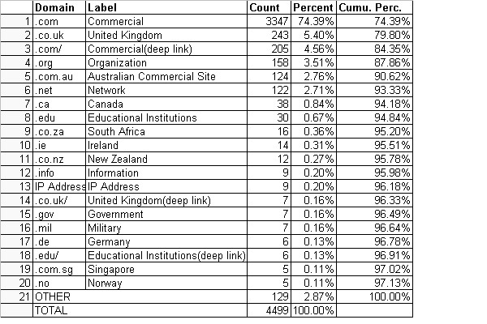
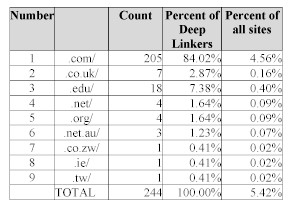
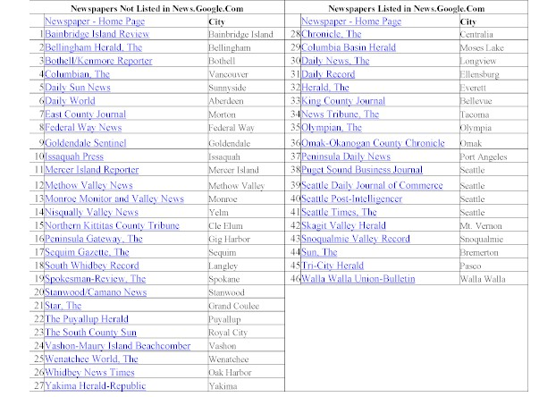

Introduction. News search engines crawl the living Web of news sources to collect, group and distribute timely content. They look at fewer sources than traditional search engines and visit these sources more often. News search engines dynamically group content to create a Web page.
Method. In this paper, we study one news search engine, Google News We analyse and classify the sources used by this engine. We also conducted an analysis of two randomly chosen American states, Washington and Kansas, to ascertain the proportion of newspaper Websites featured on Google News.
Results. We find that Google News is biased towards newspapers in the USA: 73.24% of the sources are American. The top five countries, USA, UK, Canada, Australia and India, account for 91.95% of the sources. The top ten countries account for 94.04% of sources. A total of sixty-five countries contributed 121 sources, which accounted for 2.69% of all sources. '.com' was the most common domain extension with 78.95% of sites using it. Deep linking was used by only 5.46% of sites. Only 41.30% of Washington newspaper Websites and 52.78% of Kansas newspaper Websites were included in Google News. This indicates that regional and local news sources may be represented to a lower degree than is widely believed.
The news search engine seeks to replace the human editor with a computer algorithm. These search engines collect, group and present content from news sources on the World Wide Web. Examples of such engines include Google News, RocketNews, Yahoo! News, DayPop, AllTheWeb News and Ananova. Two arguments have been proposed in favour of having such search engines: information processing and potential diversity.
The first argument is that a search engine is able to process a vast quantity of information in comparison to a human editor. The World Wide Web is a vast repository of information and it is not possible even for an expert to be able to pay attention to a wide variety of sources. As the number of sources grows, the potential advantage of using an algorithm as an aggregator grows as well. The founder of Google News, Krishna Bharat, explains:
...we get 100,000 articles a day. A human editor couldn't read that many. We have people who try to create an aggregate of what's been done in the media on a given topic and they write a report about it. Journalists do that all the time, and they do an extremely good job. But imagine doing that for every story in the world, every time. We want to give you speed in addition to timeliness. (Kramer, 2003)
The second argument in favor of news search engines is that they could potentially provide access to more diverse opinions. Once again, the words of the founder of Google News are instructive:
I want this to be a force for a democracy. I want us to be an honest broker, and I want newspapers featured on our site to get traffic from us. There's never been a more controversial time on the planet. I think it's great to be a news source at this point because there's so much hunger for news. You see a lot more diversity in the news coverage on our site than on others. I think the diversity is a mirror to the diversity of opinion there is worldwide. One of the things that makes us objective is we show all points of view. Even if you disagree with one, we give you both -- the majority and the minority point of view. The ones you don't agree with are education. It's nice to know what the other side is thinking. You'll see left-leaning ones as much as much as you see right-leaning ones. Frankly, the software doesn't know the difference between left and right, which is good.(Kramer 2003)
Our interest here is in the second argument. Clearly, the value of the news search engine as an intermediary in the content distribution process hinges on the diversity of the content. If the content is diverse, the news search engine is perceived as a legitimate aggregator. If the content is not diverse, the results will appear biased to an interested reader leading to an erosion of credibility. In our view, the diversity of sources directly correlates with diversity of content. Imagine a news search engine that aggregates information from all news sources. Such an engine could potentially become the broker that Bharat envisions. However, if a news search engine simply focuses on a bounded subset of sources(e.g. only college newspapers), the news is likely to be skewed.
Two recent papers, Gerhart(2003) and Hindman, et al. (2003), have argued that search engines may reduce diversity. Gerhart demonstrates that for controversial topics, search engines are likely to present 'the sunny side' more often, thus, potentially suppressing controversy. Views that not part of the mainstream are not well represented. Hindman, et al. argue that, while all Web pages are potentially retrievable, only a few well-linked sites are visible when a user queries a search engine. As a result, they expect that search engines will aid in the creation of a winner-take-all traffic structure with a few sites dominating. This is consistent with the work of Huberman and colleagues; see, for example, Adamic and Huberman (2000). These papers have already drawn some criticism for over-stating the case for diversity and monopoly power. For instance, Brooks (2004) has argued that these papers, 'expect Google to be something other than Google'. While acknowledging this criticism, it is our position that as information brokers become more pervasive, the mechanism they adopt to generate content deserves academic scrutiny.
Therefore, our goal in this paper is to examine the extent of diversity among the sources used by one news search engine: News.google.com. Google closely guards its list of 4,500 sources for business reasons. Our request for the list of sources was politely declined. Therefore, in this paper, we manually identify, classify and analyse these sources.
Exploratory findings are presented. While at least ninety-three countries are represented in Google News, the content is highly US-centred: 73.24% of the sources were American sites. Moreover, sources from a few countries dominate. Sites from five countries: USA, UK, Canada, Australia and India, make up 91.95% of the sources. The vast majority of sources (74.39%) had a .com extension. Moreover, local newspapers are not as well represented as may have been previously thought; only 41.30% of newspaper Websites in Washington state and 52.78% of newspaper Websites in Kansas were represented on Google News.
News search engines conduct four types of activities: crawling, indexing, grouping and distribution. The first two steps are similar to other search engines. News search engines crawl several sites to collect information. This information is then added to an index.
News search engines excel at grouping of information. The information in the index is re-organized into sub-categories such as World, Business, Technology and Sports and placed on a Website. DayPop places news information into the categories, Top News, Word Bursts (stories are grouped by key words in this section) and News Bursts (stories are grouped by story words in this section).
The distribution of the information from the news search engine to the consumer takes place through many channels. Users could visit the Website of the news search engine and peruse it just like any other news Website. They could also search the index for stories, of course. News search engines do not cache content and typically store content for a short period (e.g., Google News retains stories that are thirty days old or less). Alternatively, users could sign up for e-mail alerts in specific categories. For instance, a user could choose to follow all stories that mention the words 'Tiger Woods'. The search engine would then send them an e-mail when there is a new story that mentions these words. News search engines are different from traditional search engines in the following ways:
For the purpose of this paper, we focus on Google News, the news search engine of Google.com. This service scans about 4,500 news sources regularly to gather and organize content. We chose to study this news search engine for the following reasons:
At first glance, news.google.com, the Website of Google News, appears to be just another news site. In actuality, it is a complicated technological endeavor that seeks to simulate a news Website by gathering information from 4,500 news sources.
The Google News Website describes itself as follows:
Google News presents information culled from approximately 4,500 news sources worldwide and automatically arranged to present the most relevant news first. Topics are updated continuously throughout the day, so you will see new stories each time you check the page. Google has developed an automated grouping process for Google News that pulls together related headlines and photos from thousands of sources worldwide—enabling you to see how different news organizations are reporting the same story. (Google News, 2004)
How does a news source make it to Google News? First, a team of reviewers decides which site to crawl(Kramer 2003). Second, sites are able to opt-out of this process. This process requires specific language in a file titled robots.txt. Google will respect the specific meta-tag in this file and not crawl anybody who does not wish to be crawled. As the founder of Google News put it:
We are only able to crawl sites that allow us to crawl. Any news search that tries to link you to new content is going to come up against a barrier—either they specify that robots are not allowed to access this site, or they put the content behind registration that the machine cannot get by. This is a fundamental issue. It has to do with how people monetize their content. The news community needs to figure out how they're going to get traffic from us. The New York Times has a nice solution. They allow us to connect to the content and send traffic to one page. If people want to browse beyond that then they have to register. If people are really happy with the content they'll register. I think that's a great model. (Kramer 2003)
It may seem strange that publishers are willing and eager to have Google News crawl their Websites and collect data several times a day. In contrast to Google.com, at this time, Google News does not cache stories. Users are directed to the original Website. Thus, Google News directly contributes to the traffic of sites making it an attractive proposition for publishers. Therefore, publishers view the site as beneficial since it increases traffic to their sites.
In addition to the main site, Google News runs five country editions for Australia, Canada, France, Germany, India, Italy, New Zealand, Spain, United Kingdom and United States. Google News is multi-lingual, the France, Spain, Germany and Italy editions are in French, Spanish, German and Italian respectively. Interestingly, the front page of each edition does not focus on stories exclusively from that country. Rather, it is a mix of sources.
As indicated earlier, Google closely guards its list of news sources for business reasons. Therefore, to gain access to the list of sources, and identified the name and Website of the sources. Data collection started on July 1, 2003 and ended on September 21, 2003. All information was entered into a spreadsheet. As new names were added, we took care to make sure that there was no duplication. As a result of this process, we were able to create a spreadsheet with 4,499 sources. This formed the basis of our analysis.
Table 1 provides the number of sources classified by country. The USA tops the list with 73.24% of the sources. The top 5 countries, USA, UK, Canada, Australia and India, account for 91.95% of the sources. The top 10 countries account for 94.04% of sources. The top 28 countries (each of these countries had at least five sources) account for 96.78% of sources. A total of 65 countries contribute 121 sources which account for 2.69% of all sources.
This clearly demonstrates the highly concentrated nature of the distribution of sources across countries. To examine this further, we mapped the distribution of sources across countries on a log-log scale after sorting them on the number of sources (Adamic 2000). If the distribution follows the power-law distribution, the expected result will be straight line on this chart (a chart without the log transformation leads to a L-shaped result). The results are shown in Figure 1. This is a typical power-law distribution.
We also classified sources by geographical region, with the result shown in Table 2. North America has a clear lead over other regions. North America and Europe jointly account for 90.62% of all sources.

Table 2: Number of sources, by region
Table 3 provides an analysis of the domain extensions of the news sources used on Google News. '.com' was the most common domain extension with 74.39%. We have used the convention '.com/' to indicate deep linking. If this is added, the popularity of '.com' rises to 78.95%. Country-specific domains such as '.co.uk', 'co.au' and 'co.za' were also popular.

Table 3: Summary of domain extensions
Finally, we look at the deep linking practices of Google News in Table 4. A total of 244 news sources or 5.44% were deep-linked and '.com/' was the most common deep-linked domain with 4.56%.

Table 4: Overview of deep linking practices
To understand the proportion of the news universe captured by Google News, we procured a list of regional and local newspapers Washington State. This list was obtained from the Newspaper Association of America's Website. A total of forty-six newspapers was listed for Washington State. Every newspaper in this list had a Website and, therefore, was a potential candidate for Google News.
The results of our analysis is shown in Table 5. Only 41.30% of newspapers was listed on Google News. This was a surprise to us since we expected almost the entire list of newspapers to be represented.

Table 5: Washington State Newspapers
We found that 52.78% of newspapers was included. Data for this are shown in Table 6.
Table 6: Kansas state newspapers
In this paper, we present an empirical analysis of a news search engine, Google News. Our results show that, while there is some evidence for diversity among news sources, Google News is US-centred. Most of the sources have a '.com' extension. To our surprise, we found that only 41.30% of Washington and 52.78% of Kansas newspaper Websites were represented.
As news search engines become more popular, their claims of diversity and objectivity deserve careful scrutiny. Our work suggests that Google News may not be as diverse as previously thought. Google News is sure to expand its list of sources as it grows. Future research must examine how content is grouped and the impact of grouping algorithms on diversity.
Some readers may look at our findings and conclude that Google News is as diverse as it should be. Is it reasonable to expect a news search engine to capture the universe of sources for a defined set (e.g., all local newspaper Websites in the US)? Perhaps there is a minimum level of diversity one would expect from an impartial broker.
Much is unknown about how exactly Google groups content on Google News. Therefore, simply making it to the list of 4,500 sources will not be adequate to shine.
The author wishes to thank his student, Karen Tellevik, for her contributions, the suggestions of the anonymous referees.